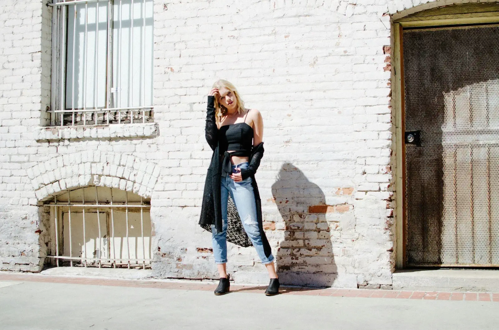
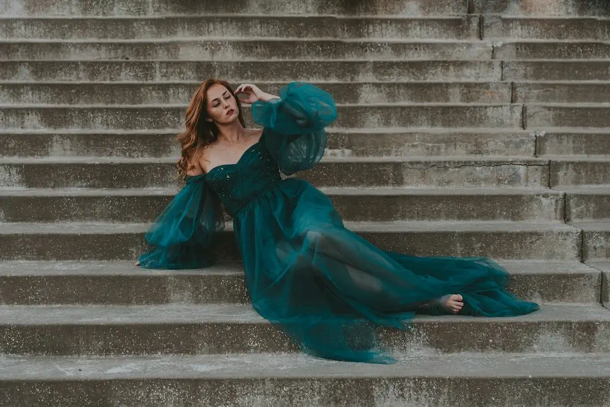

August 10, 2025
Concrete Couture
Street Style Statements
City streets are more than just a backdrop, they are a runway in motion. Street style thrives on individuality, mixing tailored pieces with playful elements to create looks that are as unique as the people who wear them. Think oversized blazers paired with graphic tees, flowing skirts with chunky sneakers, or a sharp trench coat layered over distressed denim. It is about experimenting with proportions, textures, and unexpected accessories that demand a second glance. In the heart of the city, confidence is your best statement piece.
Metropolitan Minimalism
Minimalism in the city is far from boring. This style celebrates refined silhouettes, muted tones, and thoughtful details that speak volumes without shouting. Picture monochrome ensembles, impeccably tailored trousers, and crisp white shirts paired with structured handbags. It is the art of dressing with intention where each piece is chosen for its quality, versatility, and timeless appeal. In the fast-paced rhythm of city life, minimalism offers a calm and effortless elegance that never goes out of style.
Nightfall Glam
When the sun dips behind the skyline, the city transforms and so does its style. Nightfall Glam embraces shimmering fabrics, sleek tailoring, and a touch of drama perfect for rooftop cocktails, gallery openings, or candlelit dinners. Think slip dresses in jewel tones, tailored jumpsuits with metallic accents, and stiletto heels that catch the light with every step. It is all about creating a captivating presence under the glow of city lights, blending sophistication with just the right amount of sparkle.
